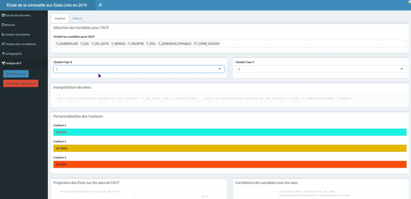
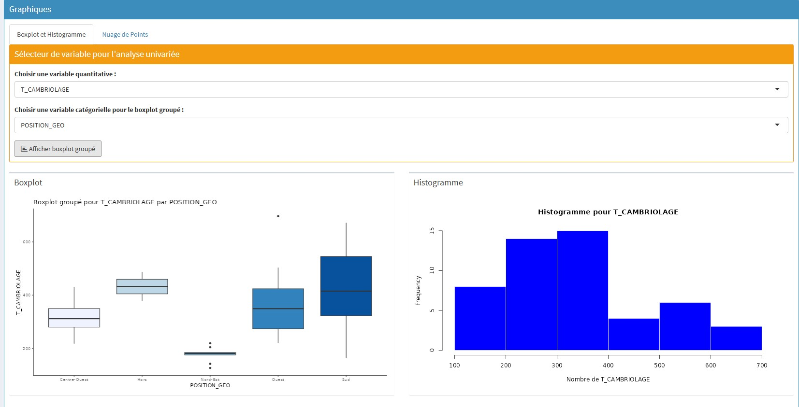
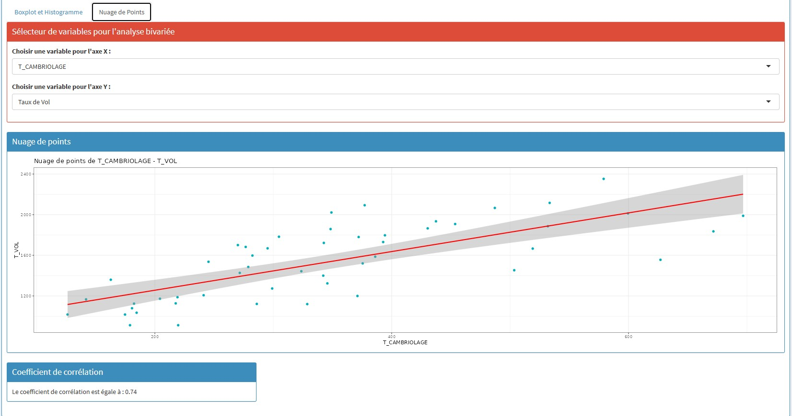
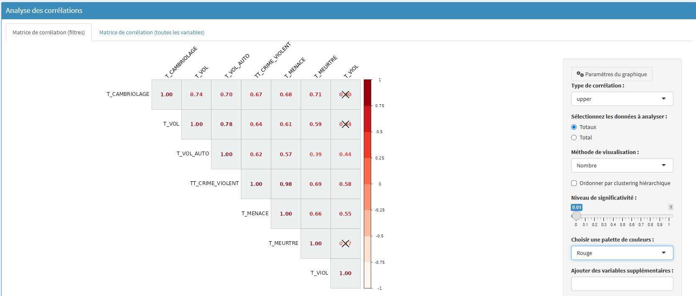
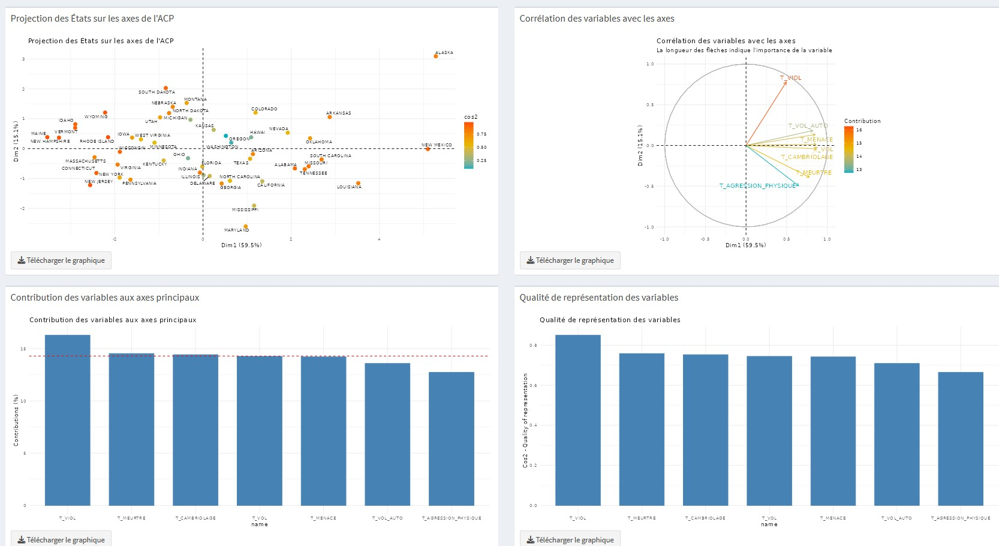

Reporting multivariée – Analyse de la criminalité aux États-Unis
Dans le cadre de cette SAE, j’ai conçu une application interactive permettant d’explorer les données de criminalité aux États-Unis pour l’année 2019 à travers une série d’analyses statistiques et de visualisations dynamiques. Le projet repose principalement sur l’Analyse en Composantes Principales (ACP), une méthode de réduction de dimension permettant de transformer un ensemble de variables corrélées en un nouveau jeu de variables décorrélées appelées composantes principales. Cette approche statistique facilite l’identification de structures sous-jacentes et de tendances globales dans les données.
Les données exploitées proviennent de sources officielles telles que le Ministère de la Justice américain et le FBI, et couvrent la période de 1960 à 2019. Les statistiques sont exprimées pour 100 000 habitants, permettant une comparaison équitable entre États.
L’application, développée sous R avec Shiny, est accessible ici :
🔗 Application interactive – Criminalité USA 2019
Fonctionnalités de l’application
- Extrait des données : un tableau interactif permet de visualiser un sous-ensemble du jeu de données brutes.
- Résumé : synthèse globale des tendances principales.
- Analyse descriptive : exploration des différentes catégories de criminalité (crimes violents et crimes contre les biens).
- Corrélations : mise en évidence des relations entre les variables socio-économiques (revenu, pauvreté, chômage, etc.) et les taux de criminalité.
- Cartographie : visualisation géographique des résultats par État, facilitant l’analyse spatiale.
Grâce à cet outil, les utilisateurs peuvent manipuler les données et visualiser facilement des tendances criminelles complexes à l’aide de techniques statistiques robustes et accessibles.
Compétences développées
- Maîtrise de l’ACP : compréhension théorique et mise en œuvre concrète de cette méthode multivariée de réduction de dimension.
- Traitement et visualisation de données complexes : travail sur des jeux de données réels à l’échelle nationale, avec des enjeux sociaux et géographiques.
- Utilisation de Shiny : développement d’une interface interactive et dynamique en R, facilitant la vulgarisation des résultats pour un public non spécialiste.
- Analyse statistique approfondie : mise en lien entre variables socio-économiques et phénomènes de criminalité à l’échelle des États américains.
- Travail autonome : ce projet m’a permis de prendre en charge l’intégralité du cycle d’analyse – de l’importation des données à la création d’un outil finalisé.





Retour à l'accueil